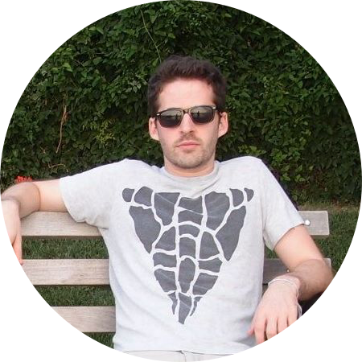
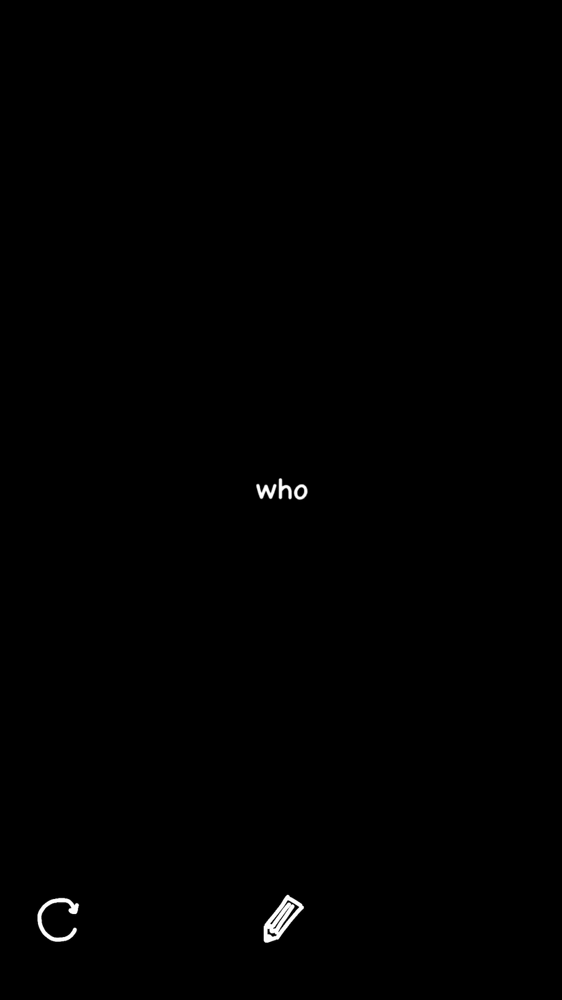

Nick Barr
 Hi there! I'm a product builder based in Brooklyn and the Bay Area.
Currently, I'm working with Khan Academy to imagine new tools that support teachers and classrooms.
On the Internet, you can find me on Twitter & Medium.
New interfaces for expression
I like giving people new ways to express themselves.
In 2015, I helped launch Slash, a custom keyboard for iOS that makes it easy to find & share links without switching apps.
Slash was named Tech Product of the Year by the Product Hunt community.
I've prototyped some simple creativity apps.
First there's Today, in which the player navigates a word through space, colliding into new words to form a sentence.
 Next up I built the Prisoner's Keyboard, which lets people construct lipograms by removing letters from their iOS keyboard.
And then there's MasterPass, an original game that combines gameplay elements from Hangman with Mastermind.
My most recent side project is Jonas, a creative storytelling + drawing app.
Way back in 2013, I helped start DrawQuest, which encouraged the habit of creativity with daily drawing challenges. The community grew to +1MM Questers. After the business shut down we open-sourced the project.
Growing networks
My very 1st startup gig was with Ning, a platform for creating your own social network for anything.
At Ning I learned about the strength of weak ties, & I continue to look for ways to bring people together.
In 2014, I worked with Quire, a betaworks-founded platform that enables people to become co-owners of the companies they love.
I also help other companies solve product challenges and figure out how to grow their own networks. I've mentored at organizations like Coalition for Queens, Orbital, Startup Institute, and Techstars.
Contact me
If you think there's an opportunity for us to work together, I'd love to hear from you! My email address is nsbarr@gmail.com.
I'm also always happy to talk about things other than work, like experimental poetry, mushroom hunting, or the depth of the Yankees' bullpen.